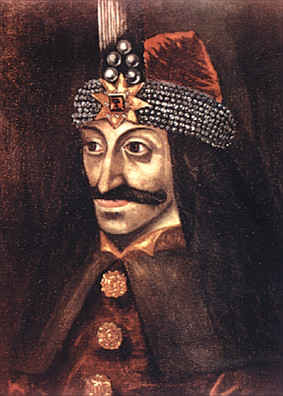

|
 Vlad the Impaler15th century prince in Transylvania, immortalized in Bram Stoker's gothic novel Dracula. Vlad preferred to execute enemies and the occasional random townsperson with anal impalement. By this means perhaps 100,000 unpleasantly lost their lives: "Dracula usually had a horse attached to each of the victim's legs and a sharpened stake was gradually forced into the body. The end of the stake was usually oiled and care was taken that the stake was not too sharp; else the victim might die too rapidly from shock."
Not a vampire.
|